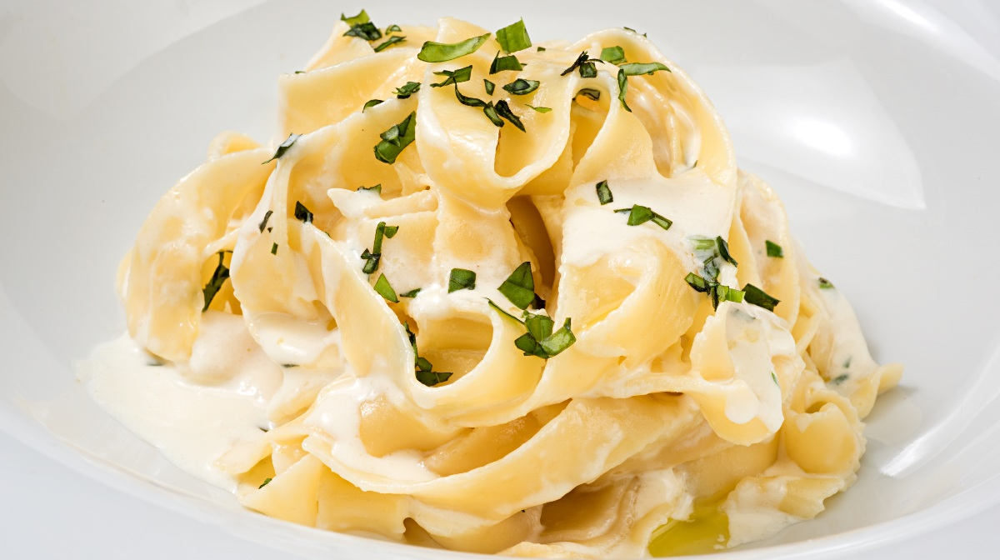
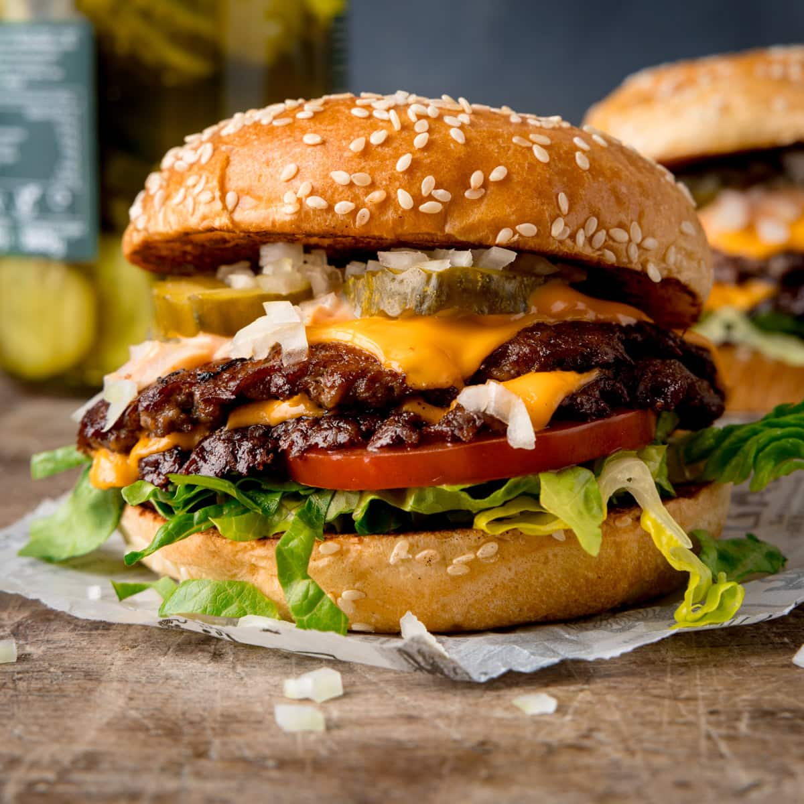
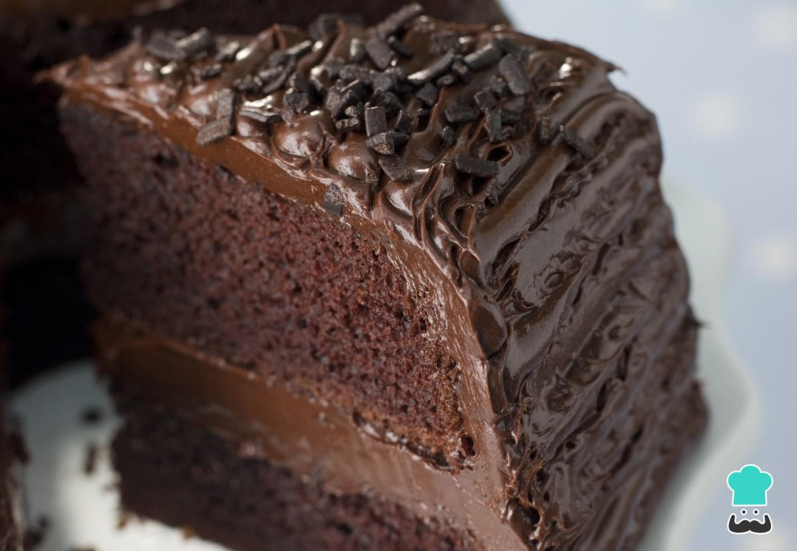

Las mejores recetas de comida para cada ocasión
En Recetas encuentras una amplia variedad de platillos pensados para cada momento del día: desde desayunos que te llenarán de energía, almuerzos nutritivos y cenas para disfrutar en compañía, hasta postres irresistibles para el toque final perfecto. Cada receta está diseñada para que cocinar en casa sea accesible, divertido y, sobre todo, delicioso.
Desayuno

Chilaquiles
Almuerzo

Pasta Alfredo

Smash Burger
Cena

Pizza Casera

Sushi California Roll
Postre
